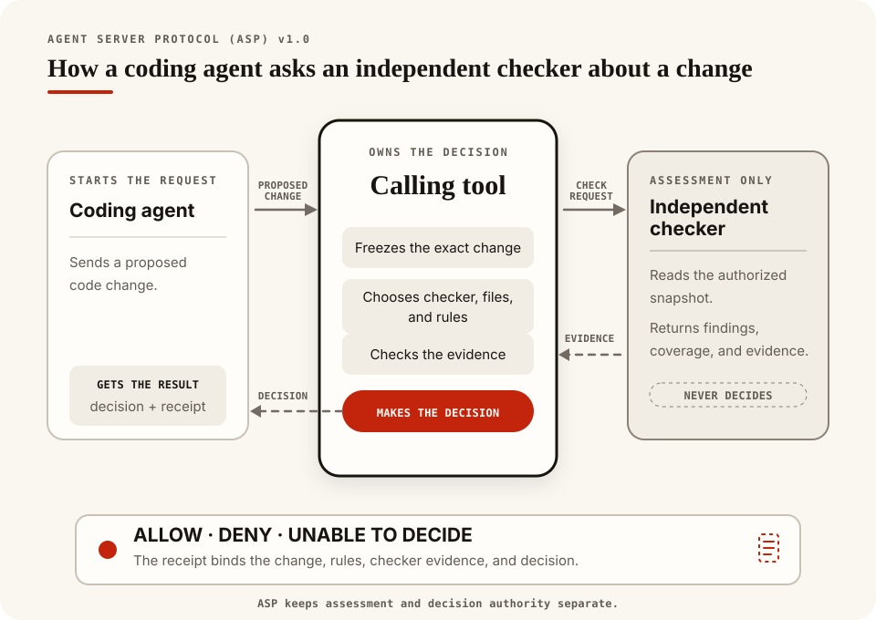

Core documentation
Opcore

Opcore gives coding agents specific feedback while they edit source. Its installed hook checks the current Git changes and returns the file, location, rule, and evidence when something needs repair.
Important
Opcore 0.3.0 is a full rewrite. We narrowed the old graph, search, and editing toolkit to focus on dependable verification during agent work:
- One Rust engine reuses parsed source facts, removing graph databases and repeated snapshot builds from routine checks.
- Feedback follows completed edits, including supported shell and MCP calls, so coverage depends less on tool-specific patch formats.
- Rules use explicit evidence and report coverage gaps; documentation ownership no longer depends on filename mentions.
- Automatic checks never execute project code. Compiler checks are opt-in for pre-commit and CI.
The old
graph,inspect, andeditcommands are retired. Install@the-open-engine-company/opcoreand follow the new setup instructions.
§Examples
See what Opcore catches
Expand an example below to see the source and finding. Use a disposable Git project, following Getting started. Fast Verify and Project Sense messages below were checked against the current binary; native compiler wording can vary with the installed toolchain.
§Fast Verify
Run opcore check --repo . --all to check these examples.
TypeScript: a function with too many parameters
export function total(
a: number,
b: number,
c: number,
d: number,
e: number,
f: number,
) {
return a + b + c + d + e + f;
}Rule: complexity.max-parameters
function parameters: 6; configured maximum is 5JavaScript: decision logic crosses the complexity limit
const allowed = flags =>
flags[0] && flags[1] && flags[2] &&
flags[3] && flags[4] && flags[5] &&
flags[6] && flags[7] && flags[8] &&
flags[9] && flags[10];Rule: complexity.max-cyclomatic-complexity
cyclomatic complexity: 11; configured maximum is 10Python: a function with too many parameters
def total(a, b, c, d, e, f):
return a + b + c + d + e + fRule: complexity.max-parameters
function has 6 parameters; configured maximum is 5Rust: a function with too many parameters
fn total(
a: u8,
b: u8,
c: u8,
d: u8,
e: u8,
f: u8,
) -> u8 {
a + b + c + d + e + f
}Rule: complexity.max-parameters
Rust callable has 6 parameters; configured maximum is 5Go: a function with too many parameters
package metrics
func total(
a int,
b int,
c int,
d int,
e int,
f int,
) int {
return a + b + c + d + e + f
}Rule: complexity.max-parameters
Go callable has 6 function parameters; configured maximum is 5Terraform JSON: the wrong document shape
In main.tf.json:
42Rule: hcl.syntax
IaC JSON syntax requires an object at the document rootShell: a block missing its closing fi
if true; then
echo okRule: shell.syntax
Invalid Shell syntax: expected 'fi'Protocol Buffers: a message missing its closing brace
syntax = "proto3";
message Greeting {Rule: protobuf.syntax
Invalid Protobuf syntax near }§Project Sense
Sense compares the described Git baseline with the source change. Run opcore sense --repo . after making the change.
A TypeScript import introduces a runtime cycle
src/a.ts already imports src/b.ts. This new import in src/b.ts closes the loop:
import { a } from "./a";
export const b = a + 1;Rule: sense.runtime_cycle
cycle: src/b.ts -> src/a.ts (2 files)
witness: src/b.ts -> src/a.ts -> src/b.tsJSON evidence identifies the introduced trigger:
{"from":"src/b.ts","to":"src/a.ts","kind":"runtime"}A copied file introduces exact duplication
Suppose src/a.ts is a 667-byte module already in the baseline. Adding byte-for-byte identical content as src/b.ts produces:
Rule: sense.duplication.identical_file
duplicate identical file: src/b.ts (2 occurrences, was 1)The report lists src/b.ts as changed and src/a.ts as the existing occurrence. The default minimum is 256 bytes, so a tiny shared snippet does not trigger this rule.
A TypeScript module grows past its public-interface limit
Suppose src/api.ts already has 20 explicit exports. Adding one more crosses the default boundary:
export const twentyFirstValue = 21;Rule: sense.interface.module_exports
The finding records before: 20, after: 21, and limit: 20. Unchanged or reduced interface debt does not block. Any increase above the limit does, including a change from 21 to 22 exports.
An important module changes without its registered documentation
Suppose ten modules import src/core.ts, and .opcore.json binds that source to docs/core.md through documentation.bindings. Renaming a public export without updating the document produces:
Rule: sense.documentation.document_not_updated
update the registered document with this source changeOpcore reads only the exact source-to-document binding. It does not guess ownership from filenames or search Markdown for matching words.
§Native checks
These opt-in checks also need the project setup and explicit execution authorization described in Providers. The diagnostics below illustrate typical compiler or type-checker output.
Rust-native: a return value has the wrong type
fn count() -> u32 {
"one"
}Rule: opcore-rust-native/cargo-check
E0308: mismatched typesSpans and added help come from the installed Rust toolchain.
Node-native: a number is assigned to a string
const label: string = 42;Rule: opcore-node-native/typescript-check/TS2322
Type 'number' is not assignable to type 'string'.Exact text belongs to the installed project-local tsc.
Python-native: a number is assigned to a string
value: str = 1Pyright rule: opcore-python-native/type-check/reportAssignmentType
The parser test form is:
number is not assignable to strWith mypy fallback, the rule is opcore-python-native/type-check/assignment, commonly with Incompatible types. Exact wording belongs to the selected checker version.
Run opcore rules to see every built-in rule and its default policy field.

Open the phone-sized hook diagram
{kind=link}
Verify, available as opcore check, checks syntax and source hygiene for JavaScript and TypeScript, Python, Rust, Go, HCL-based infrastructure code, Shell, and Protocol Buffers. JavaScript, TypeScript, Python, Rust, and Go also receive callable size and complexity checks.
Project Sense compares repository relationships with the Git baseline. It reports introduced runtime cycles, exact duplication, growing interface violations, and documentation obligations. Unchanged or reduced baseline debt doesn’t block.
The default checks read a captured Git view and verify that it stayed unchanged. They don’t execute repository code or alter source and Git state. The installed post-edit hook sends Verify and Sense findings back to the agent for repair. Commit hooks and CI provide the final checks.
§Get started
Upgrading from opcore 0.2.x or an Opcore Zero development install? Follow the migration instructions before installing.
The npm release supports Linux x86-64 with glibc 2.39 or newer and Apple silicon macOS. You’ll need Node.js 18 or newer, npm, Bash, and Git. Agent integration requires Codex or Claude.
npm install -g --foreground-scripts @the-open-engine-company/opcore
opcore --versionFrom a Git project, run:
opcore doctor --repo .
opcore check --repo . --allThe installer sets up every detected agent at user scope, so its hooks apply across that agent’s Git projects. After a Codex install, restart Codex, open /hooks, review the command, and trust it. Doctor checks installed configuration; follow the activation smoke test to verify automatic execution.
If npm skipped lifecycle scripts, run opcore setup. For the CLI without agent integration, use opcore setup --no-hooks; project-local and CI setup also works without an agent installation.
See Getting started for source and archive installs, agent selection, prerequisites, and cleanup. Windows, Linux ARM64, and Intel macOS have no published binaries.
§Workflows
opcore run post-edit # current changes against HEAD
opcore run pre-commit # full staged Verify and introduced Sense
opcore run ci --base <base-commit> # full committed Verify and introduced Sense
opcore run pre-commit --comparison introduced # Fast brownfield gate; native needs a safe baselineAdd the pre-commit workflow to your Git hook and require the CI workflow alongside existing tests and linters. Configure the applicable native providers for compiler or type-checker coverage; those runs also require explicit host authorization. The setup guide has recipes.
One root .opcore.json holds shared settings and workflow overrides. Pre-commit can use stricter thresholds or fewer exclusions than post-edit; monorepos can select different native project roots. See Configuration.
Use check or sense to run an individual evaluator. Plain check reports Nothing checked on a clean worktree; check --all checks the current project even when nothing changed. A full check with no selected supported source reports unsupported coverage.
| Result | Next step |
|---|---|
Clean or allow | The selected required checks completed with no findings. |
Findings or deny | Read the evidence, repair the change, and rerun the same command. |
Not checked | No source changes required checking; use check --all for a project check. |
Partial | Review the missing Sense coverage. Use --allow-partial only if you accept those gaps. |
Unsupported | Choose supported source or a provider that applies to the project. |
Incomplete or indeterminate | Resolve the reported setup, capture, or evaluation failure and retry. |
--advisory makes findings report-only; missing coverage still blocks. Add --json for structured evidence. The getting-started guide explains exit statuses and partial-coverage options.
The examples above show findings in every supported language family.
§Troubleshoot Sense coverage
Sense resolves only uniquely confirmed local dependencies; bare Node packages, missing, dotted, or colliding Python absolute imports, Cargo-configured Rust roots, external Go modules, and HCL/Shell/Protobuf loading semantics remain deliberately unresolved. A one-component Python import does resolve when it has exactly one sibling module or package target. effectivePolicy.importantFanIn is the configured direct-dependent threshold for important modules. Fixed duplicate-analysis limits such as dedup_region_file_limit cannot be raised at runtime. For generated or vendored trees, use literal repository-relative exclusions such as {"schemaVersion":1,"targets":{"exclude":["generated","vendor"]}}; targets.exclude does not accept globs.
In JSON, documentationCoverage.evaluated: false means no qualifying documentation obligation was evaluated, while a registry state of not_read means the registry was not needed for that view. publicSurfaceAuthoritative: false means Opcore could not establish a complete explicit public surface. The fetchable Sense reference has the full resolution table and limits; configuration defines exclusions. Release bundles rewrite these development links to their exact vX.Y documentation archive.
§Providers
| Provider | Checks |
|---|---|
| Fast | Built-in syntax, hygiene, and code metrics; the default CLI and hook path. |
| Rust-native | Cargo Check against the selected workspace or package. |
| Node-native | Project-local TypeScript checking with an npm lockfile. |
| Python-native | Host Pyright or mypy using the selected Python environment. |
Native checks are opt-in. They may execute repository-controlled build scripts, wrappers, or checker plugins with the current account’s access to host files and the network. Their temporary copy doesn’t isolate that execution; automatic hooks always use the default checks. See Provider setup and usage before selecting native profiles.
§Agent Server Protocol
Opcore includes the complete Agent Server Protocol (ASP) v1.0 definition and four check providers. A calling tool supplies exact file contents and grants read access. Each provider returns findings, coverage, and evidence; the calling tool owns the decision and any ASP receipt.

Open the phone-sized ASP diagram
{kind=link}
Opcore’s bundled local runner reports allow, deny, or indeterminate for local use. Its result has advisory assurance and doesn’t issue an ASP receipt. Read the protocol definition for integration contracts.
§Documentation and help
Read the development documentation, including the CLI reference, public Rust API, and ASP specification. These pages contain complete static HTML without requiring JavaScript; release bundles point to their exact minor archive. In a source checkout, generate the same site from the Rust definitions:
./scripts/build-docs.shOpen target/site/index.html in a browser. CI checks the generated site on every pull request and publishes the passing main build to GitHub Pages. Running the local build only writes target/site/.
Report reproducible problems in GitHub Issues. Contributing explains useful report details and the development checks.
Before removing an npm installation, clean up its agent integrations:
opcore uninstall
npm uninstall -g @the-open-engine-company/opcoreUpdate and removal instructions cover source installs and recovery after an interrupted setup.